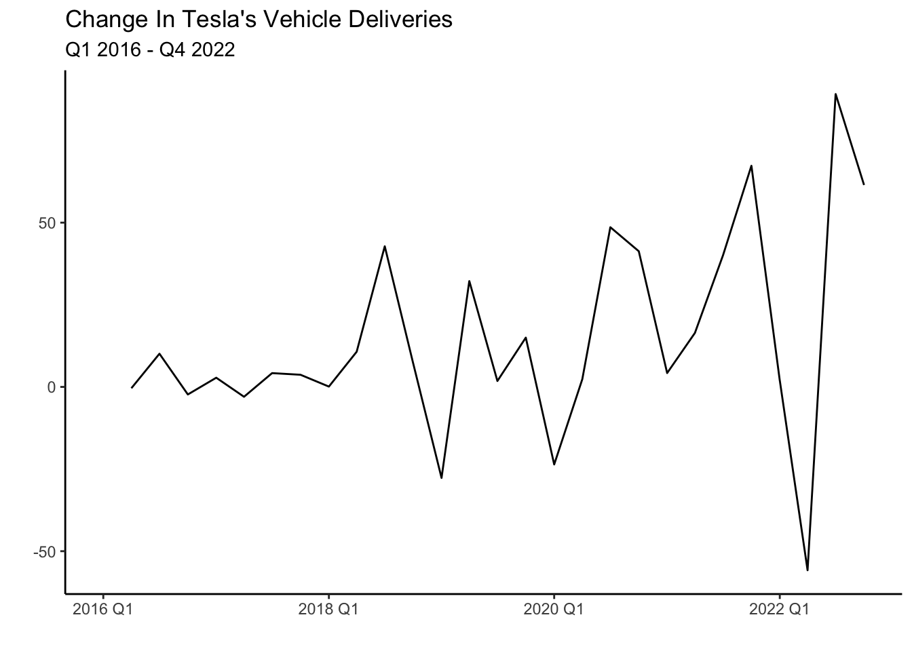
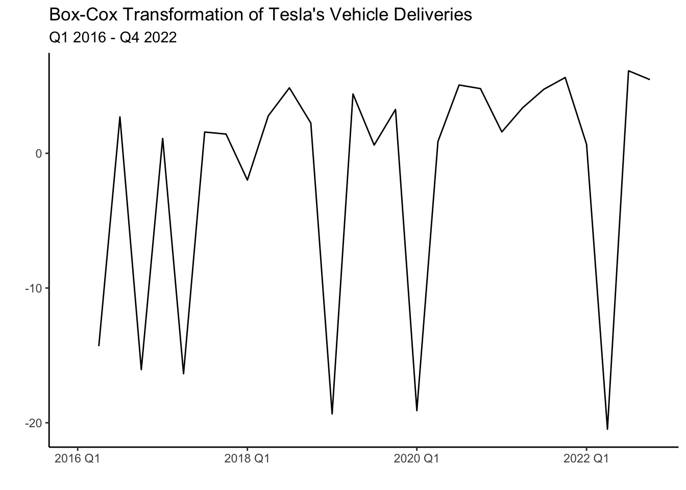
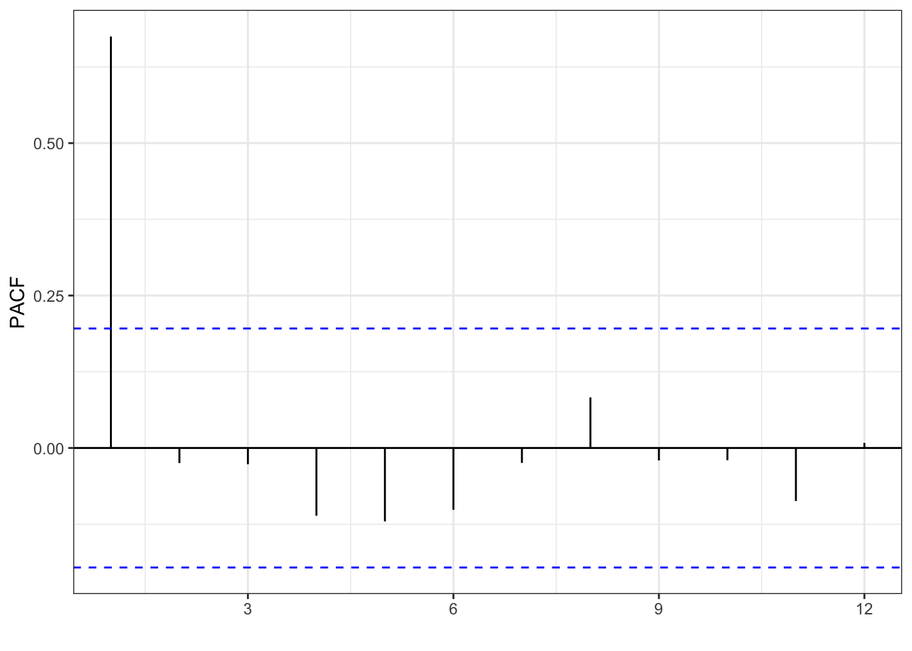
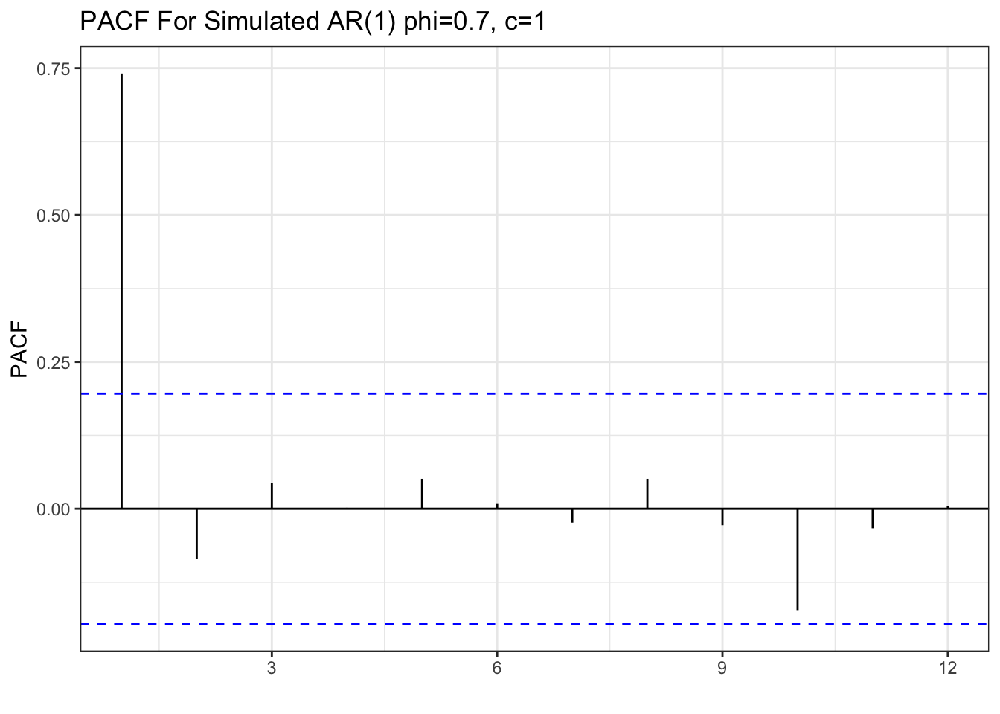
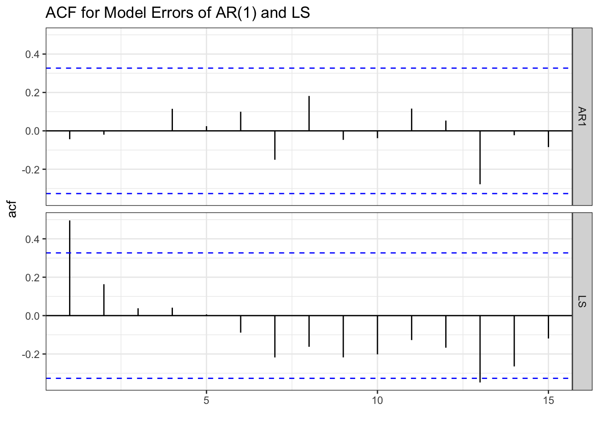
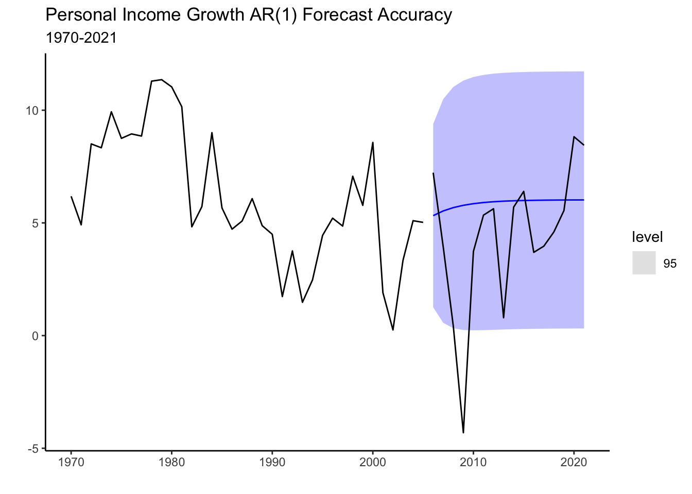

library(fpp3)
set.seed(10)
wn<-tsibble(x=rnorm(100),period=seq(1:100),index=period)6 ARIMA
In this section we will be introducing important concepts and metrics for the analysis of time series. These concepts are important in understanding one of time series most recognized models. The ARIMA model. Concepts such as white noise, stationarity, autocorrelation and partial autocorrelation are all essential in understanding the implementation of the model. The section starts by introducing the concepts, and then follows with an application of the AR(1) model. The LS model is used as a competing model to the AR. The chapter ends with the introduction to model selection metrics.
6.1 Preliminaries
White Noise
In time series, white noise refers to a sequence of random data points that have no correlation to each other. This process is used as a benchmark for other types of time series data that exhibit patterns or trends. By comparing a series with the white noise process, we can verify if the series has systematic components that can be modeled.
We can generate a white noise process by using the normal distribution with a mean of zero and a constant variance. Below we create a tsibble with the simulated data.
We can now use the autoplot() function to observe the white noise process.
wn %>% autoplot(x) + theme_classic() +
labs(title="White Noise Process",
subtitle="Mean=0 and Standard Deviation=1",
x="",y="") +
geom_hline(yintercept = 0, col="blue", lwd=1, linetype="dashed",
alpha=0.4)
A very ragged pattern is shown in the graph above. The series behaves erratically, but it always fluctuates around a mean of 0 and keeps a standard deviation of one. Such a series is unpredictable, so the best one can do is to describe it by its mean and standard deviation.
Stationarity
A time series is said to be stationary if its statistical properties do not change over time. In other words, a stationary time series has a constant mean, variance, and auto-covariance, regardless of the time at which the series is observed.
The main reason for making the time series stationary is that it is required in many time series models (including the ARIMA model). These models make predictions about future values of the time series based on past values, and the statistical properties of the past values are used to inform these predictions. If the statistical properties of the time series are changing over time, then the models may not work well, as the assumptions underlying them would not be met.
In general, before modeling and forecasting, we will check whether the series is stationary (i.e., has no trend or homoskedasticity). To eliminate the trend in the series we will use the first difference of the series. We can do this in R by using the difference() function. For example consider Tesla’s quarterly vehicle deliveries from 2016-2022.

Deliveries have mostly been in an upward trend, which makes sense as the company is currently scaling its production. This series seems to not be stationary since it crosses the mean (blue line) once and never revisits it. That is the mean is not constant and changes with time. It is possible to make the series stationary by finding differences. Below is the graph of the first difference of the series.
deliveries %>%
as_tsibble(index=period, regular=T) %>% autoplot(difference(deliveries)) + theme_classic() +
labs(title="Change In Tesla's Vehicle Deliveries",
subtitle = "Q1 2016 - Q4 2022",x="",y="") +
geom_hline(yintercept = mean(difference(deliveries$deliveries), na.rm = TRUE), col="blue", linetype="dashed", lwd=1, alpha=0.4)
The series now fluctuates closer to the mean, but unlike the white noise process behaves less erratic. You will notice that in some periods the change in deliveries from quarter to quarter is high. For example, following the lows at the beginning of the year, deliveries seem to increase sharply. There seems to be correlations between the quarters or time dependencies. We will explore this more once we look at autocorrelations, partial autocorrelations, and seasonality.
The series exhibits heteroskedasticity (increasing variance), as the variance of the series seems to be low from the period of 2016-2018 while significantly higher for the period after. To normalize the variance of the series we can conduct a Box-Cox transformation.
lambda <- deliveries %>% as_tsibble(index=period, regular=T) %>%
features(deliveries, features = guerrero) %>% pull(lambda_guerrero)
deliveries %>% as_tsibble(index=period, regular=T) %>%
autoplot(box_cox(difference(deliveries), lambda)) +
labs(y = "")+ theme_classic() +
labs(title="Box-Cox Transformation of Tesla's Vehicle Deliveries",
subtitle = "Q1 2016 - Q4 2022",x="",y="")
The transformation has made the series a bit more homoskedastic (variance is more uniform) than the series without the transformation. Note also that both transformations can be undone by using an inverse function, so that we can return to the delivery of vehicles.
A couple of statistical features to determine the stationarity of a series are the unitroot_kpss and unitroot_ndiffs. In general, a low p-value allows us to reject the null of hypothesis of stationarity.
deliveries %>% as_tsibble(index=period, regular=T) %>%
features(deliveries, features = c(unitroot_kpss, unitroot_ndiffs)) %>% gt() %>%
cols_align("center") %>%
tab_header(title =
md("**Stationarity Tests**")) %>% tab_style(locations = cells_column_labels(columns = everything()),
style = list(cell_borders(sides = "bottom", weight = px(3)),
cell_text(weight = "bold"))) %>%
fmt_number(columns =c(kpss_stat,kpss_pvalue),
decimals = 3)| Stationarity Tests | ||
| kpss_stat | kpss_pvalue | ndiffs |
|---|---|---|
| 0.947 | 0.010 | 2 |
The test reports a p-value of 0.01 when it is below 0.01 and 0.1 when it is above 0.1. Hence, the p-value confirms that Tesla deliveries are non-stationary and that two differences are required to make the data stationary.
The autocorrelation function
Autocorrelations are essential in time series analysis since they indicate the degree of similarity between a time series and a lagged version of itself (a previous period). They help identify patterns and trends in the data allowing us to predict future values of the series. For example, suppose a time series exhibits a strong positive autocorrelation at a lag of \(k\) periods. In such a case, the value at time \(t+k\) will likely be similar to that at time \(t\). Formally we can write the autocorrelation as:
We can use this metric to identify which periods are influential for our targeted forecast periods. We can also illustrate a function of a series and it’s correlation with its lags to identify/quantify crucial periods. This time let’s inspect personal income growth in the state of California. Below we load the data and create the train and test sets.
library(fpp3)
library(tidyverse)
PI<-read_csv("https://jagelves.github.io/Data/PersonalIncome.csv")
PI %>% as_tsibble(index=Date) %>%
filter_index(1970~2005) -> PI_train
PI %>% as_tsibble(index=Date) %>%
filter_index(2006~2021) -> PI_testThe autocorrelation function can now be constructed by using the ACF() function and plotting it with autoplot() as shown below.
PI_train %>%
ACF(lag_max = 12,PI_Growth) %>%
autoplot() + theme_bw() + labs(x="", y="",
title="ACF Personal Income Growth in California")
The plot shows that the correlation of the series with its first lag is strongest, and that there is continuous decay in the strength of the correlation as the lags get larger. The blue lines determine which autocorrelations are statistically different from zero (significant) at the 5% level. As you can see, lags 1-4 are positively correlated with the series and statistically significant.
A white noise process on the other hand is expected to show no correlation with its lags since the series is constructed from independent draws from a normal distribution with constant variance. Below you can see the autocorrelation function of the white noise process.
wn %>% ACF(x) %>% autoplot() + theme_bw() + labs(x="", y="ACF") +
labs(x="", y="", title="ACF White Noise Process")
Interestingly, lag 14 shows a positive correlation with the series. It is important to note that correlations can happen by chance even if we construct the series from a random process.
The partial autocorrelation function
As with the ACF, the partial autocorrelation function (PACF) summarizes the relationships between a series and its lags. However, the relationships of intervening lags are removed. The sample partial autocorrelation at lag \(k\) is the correlation that results after removing the effect of any correlations due to the terms at shorter lags.
Formally speaking, when we calculate the autocorrelation between \(y_t\) and \(y_{t+k}\), information flows from \(t\) to \(t+k\), so that indirectly \(\rho_k\) (the correlation) accounts for the contribution of lags between \(t\) and \(t+k\). A series of regressions would allow us to calculate the PACF. Luckily, R calculates these easily for us as shown below:
PI_train %>%
PACF(lag_max = 12,PI_Growth) %>%
autoplot() + theme_bw() + labs(x="", y="PACF") +
labs(x="", y="", title="PACF Personal Income Growth In California")
The graph shows that the series has a strong correlation only with its first lag. Specifically, lag 2, 3, and 4 seemed to have been correlated with the series (see ACF), but this was mainly because of the influence of lag 1.
Let’s inspect the white noise process once more to confirm that there are no patterns.
wn %>% PACF(x) %>% autoplot() + theme_bw() + labs(x="", y="PACF") +
labs(x="", y="", title="PACF White Noise Process")
In sum, white noise processes are unpredictable and we can only describe them by their mean and standard deviation. Series that have patterns in their ACF or PACF can be modeled. Below we I illustrate how to model Personal Income in California with an AR(1) model.
6.2 The AR(1) model
In the previous section, we identified the growth of personal income in California to have a decaying ACF and a single significant spike (at lag 1) in the PACF. These patterns can be generated with an AR(1) model. Specifically, an AR(1) model is of the form:
Note that this model uses the first lag of the series as the single independent variable. We can easily simulate some data based on this model using R.
y<-c(0)
phi<-0.7
const<-1
nrep<-100
for (i in 2:nrep){
y[i]=const+phi*y[i-1]+rnorm(1,0,0.5)
}Now we can use the data to see what the ACF looks like for a AR(1) process.
tsibble(y=y,period=seq(1,length(y)),index=period) %>% ACF(lag_max = 12, y) %>% autoplot()+theme_bw()+
labs(x="", y="", title="ACF For Simulated AR(1) phi=0.7, c=1")
Note the resemblance of the ACF of the simulated variable to that of the personal income. Now let’s take a look at the PACF.
tsibble(y=y,period=seq(1,length(y)),index=period) %>% PACF(lag_max = 12, y) %>% autoplot()+theme_bw()+labs(x="",y="PACF", title="PACF For Simulated AR(1) phi=0.7, c=1")
Once again, if you compare the PACF to the one in personal income growth you can see the resemblance in that there is one significant spike and all other partial autocorrelations are not statistically different from zero. This allows us to confirm that we can model personal consumption growth with an AR(1) process.
6.3 Modeling and Residuals
Let’s model personal consumption using the AR(1) model. We’ll also estimate a Least Squares model to compare. Recall, that we can estimate these models by using the model() function and retrieve the coefficients with the coef() function.
PI_fit<-PI_train %>%
model(AR1 = AR(PI_Growth ~ order(1)),
LS = TSLM(PI_Growth ~ trend()))| Model Coefficients For PI Growth | |||||
| .model | term | estimate | std.error | statistic | p.value |
|---|---|---|---|---|---|
| AR1 | constant | 1.80 | 0.82 | 2.19 | 0.04 |
| AR1 | ar1 | 0.70 | 0.12 | 5.80 | 0.00 |
| LS | (Intercept) | 9.19 | 0.80 | 11.50 | 0.00 |
| LS | trend() | −0.17 | 0.04 | −4.43 | 0.00 |
Note how the estimated coefficient for the AR1 process resembles the one in our simulation. However, the estimation of this model suggest a constant of 1.8. If we changed the constant to 1.8, the simulation would resemble the PI growth data better.
If the AR(1) process correctly describes the series, the errors should behave like white noise. To inspect the errors we can use the augment() function. The ACF is displayed below.
errors_PI<-augment(PI_fit)
errors_PI %>% select(.resid) %>% ACF(.resid) %>%
autoplot() + theme_bw()
Note how the errors of the AR(1) model resemble white noise. This suggests that we have identified the systematic component of the series as being an AR(1) process. In other words, there is nothing left to model since the errors are completely random. This is not the case for the LS model, since we still observe some significant spikes (lag 1 and lag 13) in the ACF function.
errors_PI %>% select(.resid) %>% PACF(.resid) %>%
autoplot() + theme_bw()
The PACF once again shows no pattern for the residuals of the AR(1) model and some significant lags for the LS model.
6.4 Model Selection
We can further choose between these two models by looking at the AIC, AICc, or BIC.
glance(PI_fit) %>% arrange(AICc) %>% select(.model:BIC)| Model Fit Measures | ||||
| .model | sigma2 | AIC | AICc | BIC |
|---|---|---|---|---|
| AR1 | 4.30 | −20.25 | −19.89 | −17.09 |
| LS | 5.51 | 65.35 | 66.10 | 70.10 |
Here we note that the AR(1) model performs better in all of the metrics as they are significantly lower than those for the LS. The accuracy on the test set shown below, once more confirms that the AR(1) model performs better than the LS model.
PI_fc<-PI_fit %>% forecast(new_data = PI_test)
PI_fc %>% accuracy(PI_test) | Accuracy Measures | |||||||||
| .model | .type | ME | RMSE | MAE | MPE | MAPE | MASE | RMSSE | ACF1 |
|---|---|---|---|---|---|---|---|---|---|
| AR1 | Test | −1.51 | 3.47 | 2.45 | −115.69 | 156.61 | NaN | NaN | 0.33 |
| LS | Test | 2.60 | 4.43 | 3.87 | 22.50 | 106.69 | NaN | NaN | 0.48 |
The graph below shows the test set along with the forecast of the AR(1) model. Prediction confidence intervals are shown to highlight the uncertainty of the prediction. The blue line indicates the mean of the predictions which are assumed to follow a normal distribution.
PI_fc %>% filter(.model=="AR1") %>% autoplot() + theme_classic() +
autolayer(PI_train, PI_Growth) +
autolayer(PI_test, PI_Growth) +
labs(title="Personal Income Growth AR(1) Forecast Accuracy",
subtitle="1970-2021", y="",x="")